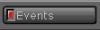
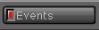

|
Back
to Demos Explained
|
These web pages archived
from http://www.oldskool.org/demos/explained/
on October 17th 2000 in compliance with the statement "If you would like
to use this website as a historical reference of the PC demoscene or a
starting point for your own pages, feel free to do so as long as you give
me (Trixter) credit somewhere." found on the home page. For the most part
these web pages are outdated, most of the links are not functional. They are
provided for the content which is found specifically on the pages.
|
![[Home]](up_home.gif)
![[Glossary]](up_gloss.gif)
![[History]](up_hist.gif)
![[Effects]](up_effec.gif)
![[Music]](up_music.gif)
![[HowToCode]](up_howto.gif)
![[People]](up_peop.gif)
![[Places]](up_place.gif) 
![[Misc.]](up_misc.gif)
Demo Events
There is an archive
of demo competitions and events
at ftp.hornet.org.
Otherwise, you can reference this list of events, nicely formatted by various
individuals:
There are also some excellent weekly newsletters put out by Hornet for
the demo scene and the demo music scene. The demo scene magazine is
called DemoNews, and you can find an archive of it at
ftp.hornet.org. The demo
music scene magazine is called TraxWeekly, and you can find an archive
of all issues at
http://peace.wit.com/~kosmic/traxweek.
Each magazine has instructions on how you can get the latest issue
automatically emailed to you.